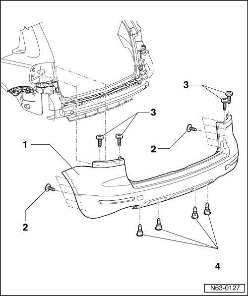
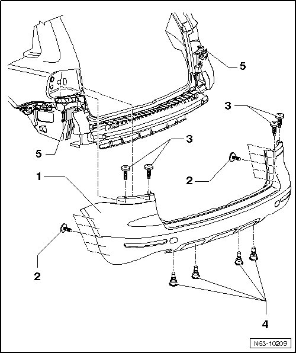

Rear Bumper
Rear Bumper
Bumper Cover
• Due to model variations, small deviations must be considered during removal and installation.
Removing

- Remove tail lamps.
- Remove the bolts - 3 - under the tail light clusters.
- Remove the bolts - 2 - from the wheel housings.
- Remove bolts - 4 - from below.
- With a second technician, pull the cover parallel out of the guides.
- Depending on vehicle equipment, disconnect wiring harnesses of electrical components installed.
Installation

To install, perform the steps used for removal in reverse order.
- Together with a second technician, slide the cover into the guides. Hold it parallel.
- Depending on vehicle equipment, connect wiring harnesses of electrical components installed.
- Tighten the screws, tightening specification, refer to--> [ Bumper Cover Assembly Overview ] Rear Bumper Overview.
• If the vehicle has lane change assist, then the control modules - 5 - must be calibrated when the work is completed.